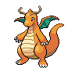
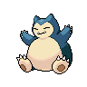

ออกเดินทาง
ไปด้วยกัน!
คู่มือ Pokémon: Let's Go, Pikachu! ที่ช่วยตั้งแต่ก้าวแรกจนถึงแชมเปียน รวมทุกคำตอบที่ต้องใช้ระหว่างทางไว้ในที่เดียว


แผนที่การเดินทาง
เดินตามเรื่องหลักทีละช่วง แตะวงกลมเพื่อบันทึกความคืบหน้าไว้ในเบราว์เซอร์นี้
8 ยิมแห่งคันโต
เงื่อนไขเข้ายิม ธาตุที่ควรใช้ และทางแก้ปริศนาที่ต้องรู้
 GYM
GYMQUEST
4 จตุรเทพและแชมเปียน
หลังครบ 8 แบดจ์และผ่าน Victory Road คุณต้องสู้ต่อเนื่องตามลำดับ เตรียมไอเท็มฟื้นพลังไว้ก่อนเข้า

ปลดล็อกทางใหม่กับพิคาชู
เทคนิคเหล่านี้ใช้สำรวจโลก ไม่กินช่องท่าต่อสู้ และใช้ได้ทันทีเมื่อเรียนรู้

ธาตุไหนแพ้ธาตุไหน?
เลือกมุมมองที่ต้องการ แล้วดูผลของ “ธาตุท่าโจมตี → ธาตุโปเกมอนที่รับท่า” ทีละขั้น
1. เลือกธาตุของคู่ต่อสู้
เลือกธาตุรองเฉพาะเมื่อโปเกมอนมี 2 ธาตุ เช่น Charizard = ไฟ + บิน
1. เลือกธาตุของท่าโจมตี
ดูว่าท่าธาตุนี้ใช้โจมตีโปเกมอนธาตุใดได้แรงหรือเบา
×4 / ×2 = โจมตีแรง · ×1 = ปกติ · ×½ / ×¼ = โจมตีเบา · ×0 = ไม่มีผล
ตัวเลขนี้เป็นผลแพ้ชนะธาตุของท่าโจมตีเท่านั้น พลังท่าและโบนัสธาตุเดียวกันของผู้ใช้ท่ายังมีผลต่อความเสียหายจริง
เจอใครบ้างในคันโต?
ค้นหาโปเกมอน 151 ตัวจากชื่ออังกฤษ เลขเดกซ์ หรือธาตุ พร้อมบันทึกตัวโปรด

รายชื่อนี้เป็น Pokédex คันโต 151 ตัว บางตัวต้องแลกเปลี่ยน โอนจาก Pokémon GO หรือรับผ่านกิจกรรม
ติดตรงไหน เปิดตรงนี้
คำใบ้และวิธีผ่านแบบกระชับ กดเพื่อดูรายละเอียดเมื่อพร้อม

เรื่องเล็กที่ไม่ควรพลาด
ของรับฟรี โปเกมอนพิเศษ และกิจกรรมหลังจบเกม
คันโตยังมีอะไรให้ค้นหาอีกเยอะ
เซฟเว็บนี้ไว้ แล้วกลับมาเช็กเส้นทางกับพิคาชูได้ทุกเมื่อ